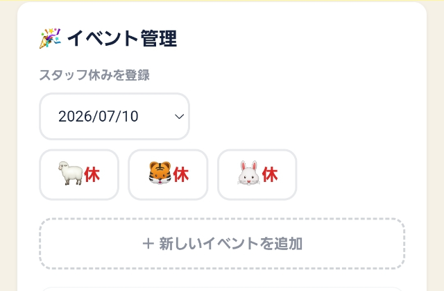
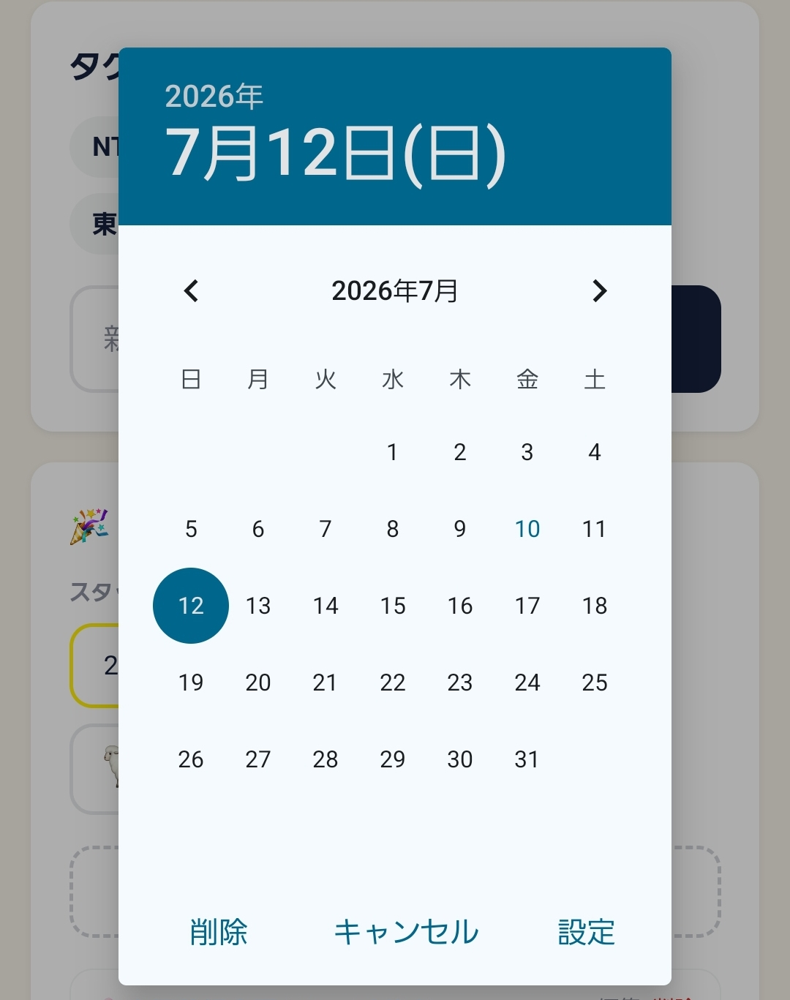
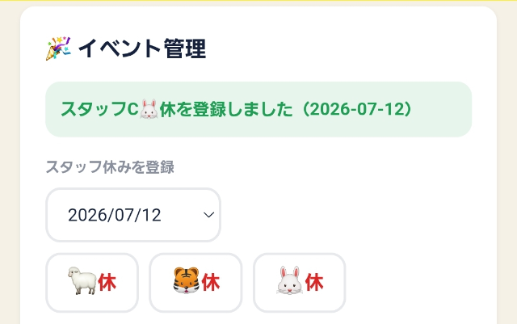
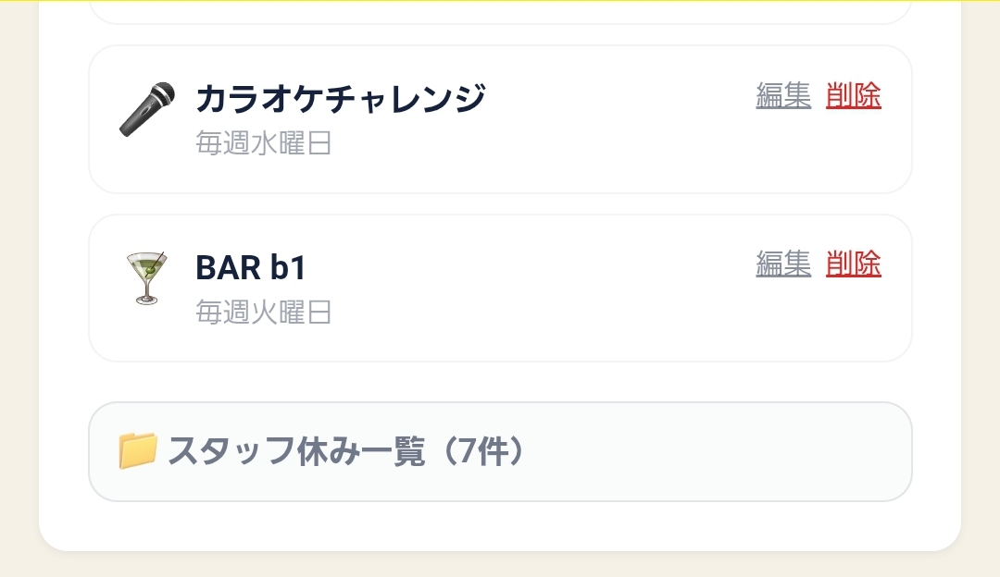
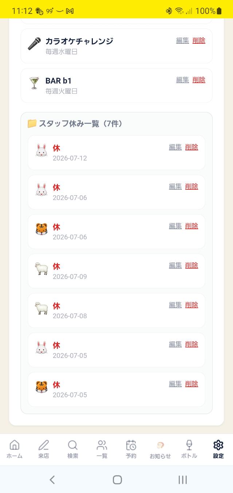

動物のボタンを押すだけで、カレンダーにお休みが反映されます。
メニューの ⚙️ 設定 を押し、「イベント管理」を開きます。


日付の欄をタップするとカレンダーがポップアップするので選びます。
🐑・🐯・🐰 のうち、担当のスタッフのボタンを押します。

「登録しました」というメッセージが出れば完了です。


「📁 スタッフ休み一覧」を押すと、これまで登録した休みがまとめて見られます。「編集」「削除」もここから行えます。